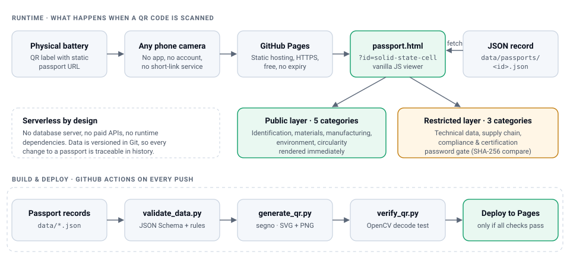
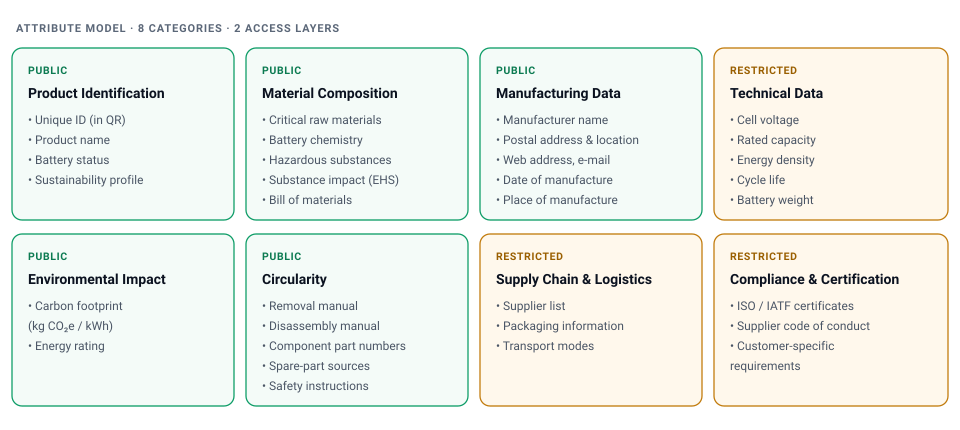

Battery Digital Product Passport
A QR-linked passport that connects a physical battery to structured lifecycle data — materials, manufacturing, technical parameters, environmental impact and circularity — with a public layer for everyone and a restricted layer for authorised stakeholders.
Scan with any phone camera — the code links straight to this site, no app or short-link service involved.
Scan or open a battery passport
Each QR code permanently encodes this site's URL for one battery. The original project's codes were generated with a subscription QR service and stopped working when the plan lapsed; these are static, self-hosted, and verified automatically on every build.
Loading passports…
Only the Solid State Cell was fully documented in the project; the other three batteries keep their QR codes and the complete attribute structure, ready to be populated. Print QR labels →
From a label on the battery to its data
A unique identifier links the physical product to its dataset. The identifier is carried by a QR code; scanning it opens the passport, where public data is shown immediately and sensitive categories require an access password.

Scan
The QR code on the battery encodes a permanent URL containing the passport id — no redirect service, nothing to renew.
Browse public data
Identification, material composition, manufacturing, environmental impact and circularity are open to consumers, repairers and recyclers.
Unlock restricted data
Technical data, supply chain & logistics and compliance documents sit behind a password layer for authorised stakeholders.
Eight categories, two access layers
Attributes were derived from the Battery Pass consortium's content guidance and the EU Battery Regulation passport concept, then grouped by who needs to see them.

Every record is validated against a JSON Schema in CI before deployment.
Decode a battery UID
Each battery gets an alphanumeric identifier built from manufacturer, product type/batch, production lot, serial number and a check code. Try the examples from the project documentation.
What is implemented — and what is not
This is an academic prototype rebuilt as a working portfolio demo. It mirrors the structure of a regulatory battery passport; it is not a certified or legally compliant implementation.
| Capability | Status | Notes |
|---|---|---|
| Passport viewer, 8 categories, 4 battery records | Implemented | Static HTML/CSS/JS, data in versioned JSON, deep links per category. |
| Permanent QR codes | Implemented | Generated with an open-source library, encode the final URL directly, decoded and checked in CI. |
| Layered access (public / restricted) | Implemented (demo) | Client-side password gate (SHA-256 compare). Demonstrates the access model; not a security control. |
| Data validation & automated deployment | Implemented | JSON Schema + consistency rules, QR decode tests, GitHub Actions → GitHub Pages. |
| UID format decoder | Implemented | Parses the documented scheme. Check-code algorithm was not defined in the project; a CRC-8 proposal is shown as an extension. |
| Complete data for all four batteries | Partial | Solid State Cell documented (17 of 33 attributes); remaining values were “to be added” in the original prototype. |
| Data entry / editing forms | Original prototype only | Described in the report; here records are edited as JSON and reviewed via pull requests. |
| Real authentication & role-based access | Proposed | Requires a server-side identity provider; out of scope for static hosting. |
| Live lifecycle updates (use phase, repurposing, recycling) | Proposed | Part of the DPP concept in the report; would need a write API and data from BMS / service events. |
| Regulatory compliance (EU 2023/1542, Annex XIII) | Not claimed | Categories follow the regulation's intent; full mandatory data set and verification are not covered. |
Why battery passports matter
Regulatory driver
Under Regulation (EU) 2023/1542, EV batteries, light-means-of-transport batteries and industrial batteries above 2 kWh placed on the EU market need an electronic battery passport, accessible via a QR code, from 18 February 2027.
- Traceability of materials and supply chain
- Carbon footprint and recycled-content disclosure
- Repair, reuse, second-life and recycling information
About the project
Developed as a four-person team project in the module “M7 Manufacturing Technology and Business Technology” at HTW Berlin (milestone report, January 2026), supervised by Prof. Dr. Christoph Sprung.
- Team: Shubham Kanawade, Sanchay Narain, Varad Shinde, Kiran Koppera
- Milestone report (PDF) · Presentation (PDF)
- Earliest single-page prototype (kept for reference)